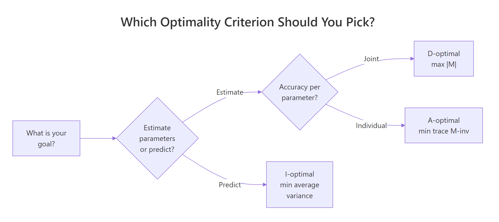
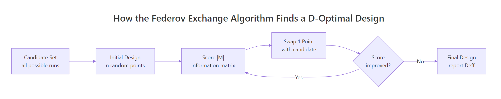

Optimal Experimental Design in R: AlgDesign & D-Optimal Criteria
Optimal experimental design picks the most informative subset of runs from a candidate set of treatment combinations, so you get tight parameter estimates on a tight budget. In R, the AlgDesign package implements the Federov exchange algorithm to search for D-, A-, or I-optimal designs, and optBlock() groups the chosen runs into batches, days, or plots when nuisance variation is a concern.
What is optimal experimental design, and when do you need it?
You budgeted 12 runs, but a full factorial with four factors wants 36. Or a few treatment combinations are physically impossible. That is where optimal design earns its keep: you list every run you could do (the candidate set), then an algorithm picks the most informative subset your budget allows. The workhorse in R is AlgDesign::optFederov(), which implements the Federov exchange algorithm and reports a D-efficiency score so you can compare designs.
Let us see the payoff straight away. We build a 36-run candidate set from a 3×3×2×2 factorial, then ask for a 12-run D-optimal subset.
Read the output as a recommendation: out of 36 possible runs, these 12 give you the most information per run for a main-effects model. Deff = 0.866 is the D-efficiency, a 0–1 score that compares your design to the best possible orthogonal design for the same model. A score above 0.8 is strong; below 0.6 usually means the candidate set is too restrictive or nTrials is too small.
Try it: Rerun optFederov() with only 10 trials and compare Deff to the 12-run result. How much efficiency do you lose by cutting two runs?
Click to reveal solution
Explanation: Cutting from 12 to 10 runs lost about 3 percentage points of efficiency. The information matrix shrinks because fewer rows means fewer degrees of freedom to separate the four factor effects.
How does the D-optimality criterion work?
Every run you perform adds a row to the model matrix $X$. The information matrix $M = X'X$ summarises how much the design tells you about the parameters. Bigger is better, because a larger $|M|$ means tighter confidence intervals on the coefficients. The D-criterion scales this quantity so designs with different parameter counts can be compared.
$$D = |X'X|^{1/k}$$
Where:
- $X$ is the model matrix (rows are runs, columns are model terms)
- $k$ is the number of parameters in the model
- $|X'X|$ is the determinant of the information matrix
We can recompute the determinant ourselves and confirm it matches what optFederov() returned.
Both numbers match, which is reassuring: the package is not doing anything mysterious. What the Federov algorithm adds is a smart search over every possible 12-row subset of the 36 candidate rows, swapping one point at a time until |X'X| stops improving.
Deff of 0.87 means you are at 87% of the efficiency of a hypothetical orthogonal design. It does not mean the experiment will "work" in any absolute sense; that still depends on the noise floor of your system.Try it: Drop factor D from the model and refit. Does the determinant go up or down? Predict before you run.
Click to reveal solution
Explanation: Fewer parameters mean each run contributes more per parameter, so |X'X|^{1/k} grows even though the matrix is smaller. The design did not change; only the yardstick did.
When should you pick A, I, or D optimality?
The D, A, and I criteria optimise different things. D maximises $|X'X|$ and gives the tightest joint confidence region for the parameters, which is why it is the default. A minimises the trace of $(X'X)^{-1}$, so it targets the average variance of the individual parameter estimates. I minimises the average variance of the predicted response across the design space, which is what you want when the goal is prediction rather than inference.

Figure 1: Picking a criterion starts with whether you are estimating parameters or predicting responses.
optFederov() switches criteria with the criterion argument. Running all three on the same candidate set shows how different the chosen designs can be.
Each criterion wins on the score it was optimising: A has the smallest A_value, I has the smallest I_value, D has the largest Deff. The differences are small on this balanced candidate set, but they grow on asymmetric candidates or larger models, so the choice of criterion should match the question you plan to ask.
Try it: Refit optFederov() with criterion = "A" but on only the first three factors. Which run gets swapped in?
Click to reveal solution
Explanation: A 3×3×2 candidate has 18 unique runs; picking 9 under A-optimality hits nearly the orthogonal ceiling because every factor level appears with balanced frequency.
How do you build a good candidate set?
The candidate set is the pool optFederov() chooses from. Whatever is not in the pool cannot be in the final design, so the candidate set is the real ceiling. Two helpers cover most cases: gen.factorial() for clean multi-level grids, and expand.grid() for mixed categorical-and-continuous factors.
gen.factorial() treats the factor indexes given in factors as qualitative and the rest as numeric, centred on zero. That convention keeps downstream model matrices well behaved: the numeric column is already on [-1, 1], so you can drop a quadratic term in without rescaling.
For quadratic response-surface work, hand-build the candidate with expand.grid() so you control the exact numeric levels.
Adding I(Temp^2) asks the algorithm to keep centre points (Temp = 0) in the design, because without them the quadratic is not estimable. Deff still lands above 0.8, so a 10-run design suffices for a main-effects-plus-curvature model on this candidate.
Try it: Build a 3-factor candidate set where the first factor has 4 levels and the other two have 2 levels, then find the 8-run D-optimal subset.
Click to reveal solution
Explanation: With only 5 parameters (intercept + 3 factor effects with appropriate contrasts for P), 8 runs give comfortable slack and the algorithm settles very close to orthogonality.
How do you add blocking with optBlock()?
Runs executed on the same day, batch, or plate share nuisance variation. Blocking groups runs so that factor contrasts are estimated within each block, absorbing that nuisance before it contaminates treatment effects. optBlock() takes an existing optimal design and assigns its rows to blocks of sizes you specify.

Figure 2: The Federov exchange algorithm swaps candidate points in and out of the design until the information score stops improving. optBlock() applies the same exchange logic within each block.
We will take the 12-run design from the opening section and split it across three days of four runs each.
$Blocks lists the run assignments; each block is a balanced slice that estimates the four factor effects with minimal correlation to block identity. Deffbound is the achievable efficiency given the block constraints, and it lands close to the unblocked Deff = 0.866 because our candidate was already symmetric.
optBlock() can build the design and the blocks in one step. If you pass a candidate set and a model formula directly, it will pick runs and block them simultaneously. Splitting the two stages (optFederov then optBlock) keeps each step auditable, which is usually easier to explain to a reviewer.Try it: Re-block the same 12 runs into two blocks of six. Does efficiency change?
Click to reveal solution
Explanation: Efficiency holds steady because the design itself did not change. Block size is a practical choice (how much can you run in one day?) more than an efficiency lever.
How do you validate and compare designs?
Three checks make up the standard validation toolkit. First, compare Deff between candidate-set choices or nTrials values: small changes can surprise you. Second, inspect the correlation matrix of the model matrix columns: near-zero off-diagonals mean each factor effect can be estimated independently of the others. Third, for prediction work, look at the variance of the predicted response across the design region using eval.design().
Going from 9 to 12 runs buys about 7 percentage points of efficiency. The maximum off-diagonal correlation of 0.17 says the 12-run design is close to orthogonal: no two factor effects are tangled enough to worry about. If the maximum were above about 0.3, I would either add a run or revisit the candidate set.
optFederov() with the interaction in the formula; do not trust a design optimised for a simpler model to support a richer one.Try it: Compute the average absolute off-diagonal correlation for the 9-run design and compare it to the 12-run design's 0.17.
Click to reveal solution
Explanation: The 9-run design has higher average correlation between columns than the 12-run design, confirming that the smaller design estimates factor effects less independently. That is the cost of saving three runs.
Practice Exercises
Exercise 1: 5-factor 20-run D-optimal design
Build a 5-factor candidate with levels c(3, 3, 2, 2, 2) using gen.factorial(). Find the 20-run D-optimal design for the main-effects model and report Deff and the number of distinct runs in the chosen design. Save the result to my_opt.
Click to reveal solution
Explanation: The full factorial has 72 runs; the algorithm picks 20 distinct rows that together estimate six parameters (intercept + five effects) with high efficiency.
Exercise 2: Block the 20-run design
Take my_opt from Exercise 1 and block its 20 runs into four blocks of five using optBlock(). Compare Deffbound of the blocked design to the Deff of the unblocked version.
Click to reveal solution
Explanation: Blocking barely moves efficiency because the 20 runs were already balanced; the algorithm only needs to pick four five-run groups that keep each factor's effect within-block.
Exercise 3: Criterion head-to-head
Build a 3×3×2 candidate. Pick 9-run subsets under D, A, and I criteria. Produce a small data frame comparing Deff, A, and I across the three designs. Which criterion wins on its own score?
Click to reveal solution
Explanation: On a symmetric 18-run candidate with 9 trials, all three criteria converge to the same orthogonal design, so every score ties. Differences would emerge with asymmetric candidate sets or more parameters.
Complete Example: A paint-formulation experiment
A paint lab wants to compare pigment type (3 types), binder percentage (20, 30, 40), drying temperature (60°C or 80°C), and curing time (30 or 60 minutes). A full factorial would need 3×3×2×2 = 36 runs, but the budget is 15 runs spread across three days. The workflow below picks those 15 runs optimally and assigns five to each day.
You now have a run sheet. Deff = 0.907 on the unblocked design means you are extracting about 91% of the information that a perfectly orthogonal 15-run design could provide. Blocking kept Deffbound at 0.903, essentially unchanged, so day-to-day variation will be controlled without losing much on treatment estimation. After running the experiment, fit the response with lm(response ~ Day + Pigment + Binder + Temp + Time, data = results) so the Day block absorbs nuisance variation before the treatment effects are tested.
Summary
- Optimal experimental design trims a full factorial to an affordable subset without losing most of the statistical information.
AlgDesign::optFederov()implements the Federov exchange algorithm and reportsDeffon a 0–1 scale.- Criterion choice should match the goal: D for joint parameter estimation, A for individual parameter precision, I for prediction accuracy.
- The candidate set is the ceiling; build it thoughtfully with
gen.factorial()orexpand.grid()and include centre points for quadratic models. optBlock()groups runs into blocks (days, batches, plates) so nuisance variation does not leak into treatment effects.- Validate every design with
Deff, the column correlation matrix, and a sanity check that the model you planned is the model the design was optimised for.
| Criterion | What it optimises | Pick when | ||
|---|---|---|---|---|
| D | max $ | X'X | ^{1/k}$ | Estimating all parameters together |
| A | min trace $(X'X)^{-1}$ | Estimating each parameter precisely | ||
| I | min average prediction variance | Predicting responses over the design region |
References
- Wheeler, R. E. AlgDesign CRAN package reference. Link
- Wheeler, R. E. Comments on Algorithmic Design, AlgDesign vignette. Link
- Fedorov, V. V. (1972). Theory of Optimal Experiments. Academic Press.
- Atkinson, A. C., Donev, A. N., & Tobias, R. D. (2007). Optimum Experimental Designs, with SAS. Oxford University Press.
- Cook, R. D. & Nachtsheim, C. J. (1989). Computer-aided blocking of factorial and response-surface designs. Technometrics, 31(3), 339–346.
- Goos, P. & Jones, B. (2011). Optimal Design of Experiments: A Case Study Approach. Wiley.
optFederov()documentation. LinkoptBlock()documentation. Link
Continue Learning
- Experimental Design in R: The Three Principles That Make Results Valid and Generalisable: the parent post on randomisation, blocking, and replication.
- Two-Way ANOVA in R: how to analyse a factorial design once the experiment is complete.
- Repeated Measures ANOVA in R: for designs where each subject sees every treatment.